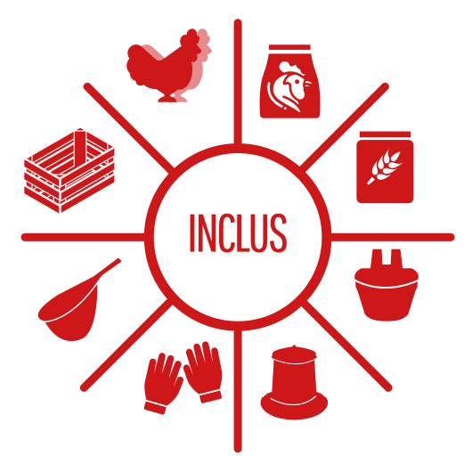
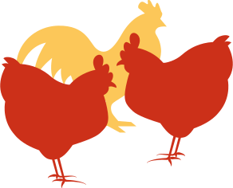

Un concept simple et unique
1 poulailler urbain | 2 poules
Tout ce qu'il faut savoir pour récolter rapidement et facilement ses premiers oeufs.
Le pack «pret@pondre» est composé
Vous aimeriez adopter des poules, mais vous hésitez un peu ?
Vous pouvez d’abord essayer sans risque en louant votre Pack.
Si cela vous plait, vous pourrez acheter votre pack et déduire 50% des loyers versés.
- 
-
1 Poulebox blanche
2 poules (d’ornement ou pondeuses)
1 mois de nourriture
1 mois de foin
1 mangeoire
1 abreuvoir
1 épuisette
1 paire de gants
Nos domaines de compétences
N'hésitez pas à nous demander conseil !
-
 Nos poules
Le saviez-vous ?
1 poule consomme jusqu'à 200kg de déchets alimentaires par an !
1 poule pond environ 5 oeufs par semaine !
10 bonnes raisons d'adopter des poules en ville
-
1
Elles produisent chaque jour des oeufs frais, sains et goûteux
-
6
Elles sont de vrais animaux de compagnie
-
2
Elles recyclent vos déchets alimentaires dont elles raffolent
-
7
Elles aèrent votre gazon en picorant et en cherchant des vers
-
3
Moins de CO2 produit (pas de transport, pas d’emballage)
-
8
Leurs fiantes mélangées au foin constituent un parfait egrais
-
4
Elles amusent les enfants
-
9
Elles sont très économique à entretenir (du grain et vos restes)
-
5
Elles sont utiles contre les insectes et font fuir les serpents
-
10
Elles sont aussi facile à entretenir qu’un hamster ou un poisson et quelques idées reçues...